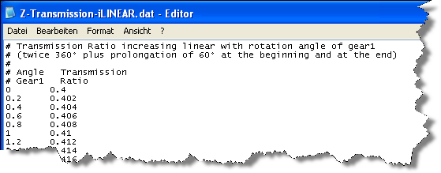
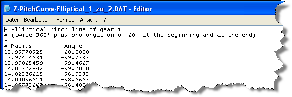

|
|
|


导入文件中的数据输入格式
你可以预先定义一条或两条工况节线或传动比递进。导入的文件必须具有“.dat”作为文件扩展名。
非圆齿轮分析中最多可处理7,800行。以#开头的行是注释，将被忽略。为了预定义传动比，需输入齿轮1的角度和传动比。

图21.4：传动比递进示例
为预定义工况节线递进，需输入半径和角度。

图21.5：工况节线示例
Input format for data in imported files
You can predefine one or two operating pitch lines or the ratio progression. The imported files must have ".dat" as their file extension.
A maximum of 7,800 lines can be processed during non-circular gear analysis. Lines that start with # are comments and are ignored. To predefine the ratio progression, input the angle on gear 1 and the ratio.
Figure 21.4: Example of ratio progression
To predefine the operating pitch line progression, input the radius and the angle.
Figure 21.5: Example of an operating pitch line